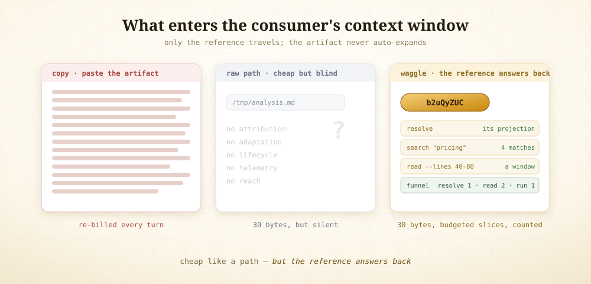
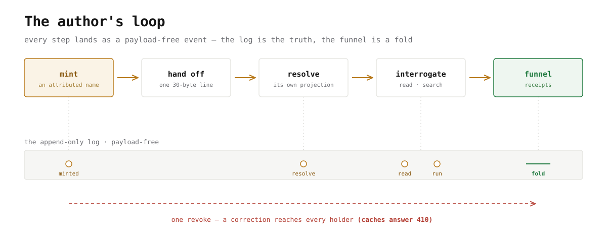
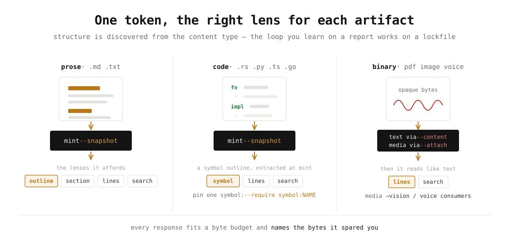
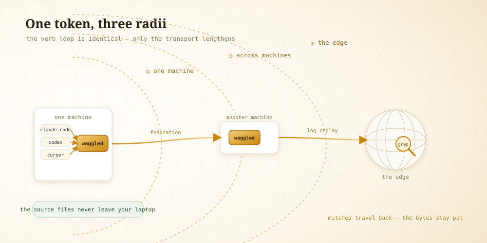
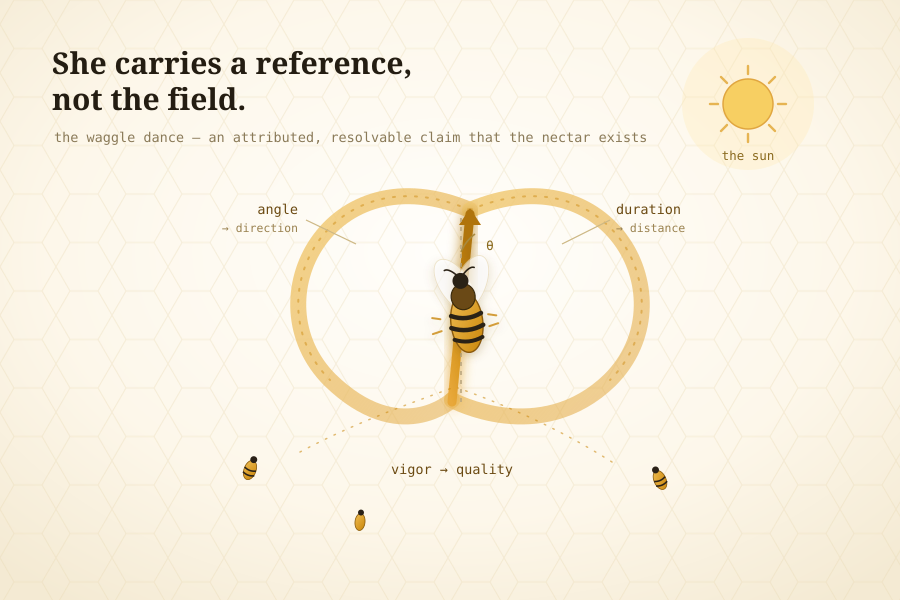

Did your AI actually read your files?
AI always answers with confidence — even when it skipped half your documents. waggle shows you which files it really opened, so you know whether to trust the answer, or send it back.
- as accurate as pasting the whole file
- 32× less for the AI to read
- 1,704 runs · 9 AI models
-
1
Set it up. The server starts itself.
$ brew install modiqo/homebrew-tap/waggle-cli # or the curl one-liner below $ claude mcp add waggle -- waggle serve --stdio # same line in Codex & Cursor
$ waggle daemon status running · 1 connection · ~/.waggle/waggle.dbOne binary, one line into your harness.
waggle serve --stdiois the MCP server — your harness launches it, and it auto-starts a shared background daemon on first use. Nothing to run, nothing to keep alive. -
2
Name it. The folder never moves.
$ waggle mint --target ./runbooks --tree --require files:all
token 4x82KC93 · 11 files · 20,825 bytes, still on diskThirty bytes. That token is the entire handoff — it is what the subagent receives, and it is not the folder.
--require files:allis you saying, on the record, what must be read. -
3
The subagent resolves it — and sees a map, not 20 KB.
$ waggle read --token 4x82KC93
00_escalation_policy.md Escalation Policy · Ceiling runbook_01.md Retry Policy · Stage 2 runbook_02.md Retry Policy · Stage 2 … 11 files A table of contents, with headings. Open any file directly by name —
read --file runbook_01.md— without ever pulling the other ten. -
4
Now query through the token.
$ waggle search --token 4x82KC93 --pattern "retry budget"
runbook_01.md L5 “…a retry budget of 2 attempts…” runbook_02.md L5 “…a retry budget of 4 attempts…” 10 matches across the tree — one call, pruned and rankedOne search spans the whole tree at once — not eleven greps, one — and every match names its file, so you open it with
read --file. The same token takes--symbolfor code or--linesfor a window. -
5
And then the line no other handoff can produce.
$ waggle coverage --token 4x82KC93
read 8/11 met falseunread 00_escalation_policy.md runbook_09.md runbook_10.mdIt never opened the escalation policy. And it was about to answer anyway. You know that before you read a word of its answer, and without knowing the right answer yourself.
Every copy is billed again, forever.
LLM APIs are stateless — every turn re-sends the whole conversation. Paste a 40 KB report into a subagent and you pay for it on every subsequent turn of that agent's life. Add a second subagent and the report lives in two context windows; add a fact-checker, three. Multi-agent systems run at ~15× the tokens of a chat, and roughly 37% of their failures trace to agents acting on divergent copies of what should have been the same information.
A raw file path is the right instinct — 30 bytes is the right size for a handoff. But a path has no attribution, no adaptation, no lifecycle, no telemetry, and no reach. waggle keeps the reference small and makes it answer back.

Copy
Send the bytes. Simple — and every pathology follows: n copies, no identity, corrections that never propagate. Today's default.
Place
Both parties touch one location. Fixes duplication, but needs shared infrastructure and says nothing about who may see what.
Name
Send a small, immutable, attributed claim. Resolution is computed per consumer, at the data, on demand. The bee's discipline, made durable.
“But my subagents share a filesystem — that’s already share-by-reference.” It is, and it’s the smart move without waggle: a path isn’t a copy. In our tests a local path with proper tools scores 90% — close to waggle’s 96%. If your agents are local, the task is short, and you never need to audit anything, use the path.
But a path is a location, and a location
can’t tell you three things a filesystem never records: did it read
it, and which parts (cat and grep leave no
trace — the whole “did it read it?” check is impossible with a
bare path); which version (the file can change under you, and no
two agents can tell whether they read the same one); and reachable from
where (a path breaks the moment one agent isn’t on this box). The
value turns on when you need to prove what happened, survive the file
changing, or reach an agent that isn’t local.
Walk the handoff, in first person.
The value isn't abstract. Stand in each role and it's obvious.
You just wrote a plan and spawned three subagents. Today you paste the plan into each prompt — three copies, re-billed every turn, and afterward you have no idea which one actually read it. With waggle you hand each the same 30-byte line. When they return, the funnel shows two resolved and read it, one never opened it — and you catch the bluff before you trust its answer. Found a bug in the plan? One revoke, and the correction reaches all three.
You wake up with one line: resolve b2uQyZUC. You resolve it into a
digest shaped for your model, an outline so you know what's inside before you
read, and next steps pointing you where to look. You grep for the one fact
you need and pull 200 bytes — not the 9,000-token plan. You never ingest what you
didn't need.
Nothing changes. The same line, the same resolve, the same grep — the bytes stay on the orchestrator's laptop, only the matches travel back. The loop you learned in one process is byte-for-byte the loop across the network.
And this can't live inside a harness. Claude Code could build clever handoffs — but that cleverness would die at its boundary; a Codex subagent couldn't see it, and the orchestrator's memory of who made what, and who read it, would be prose in one harness's context, gone at the next compaction. The reference layer has to sit outside any single harness — a neutral substrate every harness speaks in one line — so what Claude Code mints, Codex resolves, and the receipt survives them both. Handoffs are a distributed-systems problem; solving them inside one vendor's harness logic is solving them in the one place they can't be solved.
Mint once. Hand off one line. The rest is receipts.
A token is a ~30-byte attributed name. Behind it, a signed manifest with variants — different projections for different consumers. Every step lands as a payload-free event; the log is the truth, the funnel is a fold.

Mint — an identity in one call
Pin the artifact's bytes with --snapshot; the response hands you the exact line to give a subagent.
waggle mint --target "file://$PWD/q3-report.md" --snapshot # → { "token": "b2uQyZUC", # "handoff": "resolve b2uQyZUC via waggle for your working context" }
Hand off that one line
To a Codex session, a Cursor agent, a teammate — instead of the file's contents. Only the 30-byte string enters their context.
The other side works, surgically
No re-paste, no re-upload. The snapshot pinned the bytes, so this works even after the file changes — or from a machine that never had it.
waggle resolve --token b2uQyZUC # its own projection waggle search --token b2uQyZUC --pattern "pricing" # grep THROUGH the token waggle read --token b2uQyZUC --lines 40-80 # a window, never the whole artifact
You stay in control — and you can see it
A correction reaches every holder, including caches, which answer 410. And the funnel shows the handoff was actually consumed.
waggle mutate --token b2uQyZUC --change revoke --expected-version 1 waggle funnel --token b2uQyZUC # { "resolve": 1, "read": 2, "run": 1 } ← it resolved, searched, ran
The right lens for each artifact
The lens engine is text-first, not markdown-first — structure is discovered from the content type, so the loop you learn on a report works on a lockfile.

Source code is where the lens shines. --snapshot
runs tree-sitter at mint and stores a symbol outline beside the bytes.
The consumer orients before it greps, reads a definition by name, and you can
declare — and prove — what a reviewer had to reach:
waggle mint --target "file://…/contract.rs" --snapshot \ --require symbol:evaluate # a signed consumption contract waggle read --token 9u6KEr6F --symbol evaluate # the exact definition waggle coverage --token 9u6KEr6F # { met: true } ← it was reached
A PDF reads like text. The substrate extracts a PDF's or an
HTML page's text layer at mint — deterministically, and it records that it
did — so read, search, and contracts work over the
document itself. The extraction travels with the token, not as a loose
file the next agent has to find. What it will not do is guess: audio,
video, and scans carry no text layer, so waggle serves the bytes and tells the
consumer to read them with its own model — because that model is better at
it than any converter we could ship, and a receipt must never vouch for a
transcript nobody can reproduce. In our runs a PDF answered 100%
at 750 bytes, where pasting the whole file took 23,651.
Verification without trust. A subagent that claims to have
followed the plan with met: false gets caught before its answer is
trusted — check the receipt, then record accepted or
rejected. This is the question no orchestrator could ask before:
did it actually read what I gave it?
One binary. One config line. No account.
Pick one — all install the same waggle binary. It's an MCP server: one line in Claude Code, Codex, Cursor, or anything MCP-speaking.
cargo install waggle-cli
curl -LsSf https://github.com/modiqo/waggle/releases/latest/download/waggle-cli-installer.sh | sh
brew install modiqo/homebrew-tap/waggle-cli
Then wire it into your harness — all three harnesses land on the same daemon and the same tokens. What a Claude Code session mints, a Codex session resolves.
claude mcp add waggle -- waggle serve --stdio # same line in Codex & Cursor waggle init # installs the agent stub
You don’t start a server. waggle serve --stdio
is the MCP server; your harness launches it, and it auto-starts a shared
background daemon the first time any harness talks to it. Nothing to run, nothing to
keep alive. Restart your harness so it picks up the new tools, then confirm:
waggle daemon status # → running · uptime · connections · db size
The store lives at
~/.waggle/waggle.db (SQLite). To run the daemon in the foreground for
debugging instead of letting it auto-start: waggle serve --daemon.
The same loop, at three radii
Every harness on a machine shares one daemon; daemons federate across machines;
and the same tokens graduate to Cloudflare's edge by replaying the log.
search greps at the edge against content whose source file
never left your laptop.

npx wrangler deploy # a Durable Object per tenant waggle edge push # records + snapshots replicate; the FILES never leave waggle edge status # { "health": "ok", "tools": 9 }
An agent's loop — mint, hand off, resolve, interrogate, report — is byte-for-byte the same whether the other end is in this process, on another machine, or on another continent.
The bees solved this first.
A honeybee returns from a find and dances — angle encodes direction, duration distance, vigor quality. Each follower resolves the reference herself, flies her own flight. Twenty million years before context windows, evolution solved the handoff problem, and it did not solve it by pasting the meadow into the prompt.

This is stigmergy — coordination through durable marks rather than direct messages — and it is the same discipline distributed systems spent forty years converging on: tuple spaces, named-data networking, capabilities, leases, content addressing, the log-as-truth. The essay traces the whole lineage.
Read the rigor
The paper ↗
The systems-paper treatment: the four-boundary analysis, the sealed matcher and coverage-fold algorithms, the measurements, the distributed-systems lineage.
The essay ↗
Why it's shaped this way: the dance, stigmergy, and the primitives — tuple spaces, NDN, capabilities, leases, the log.
The guides ↗
Eleven guides in reading order — the five-minute loop, harness wiring, surgical content, federation, the edge, the tmux switchboard.
The spec ↗
Normative (RFC-2119): the token, the three-zone manifest, the sealed matcher, the log guarantees — plus conformance vectors generated from the implementation.